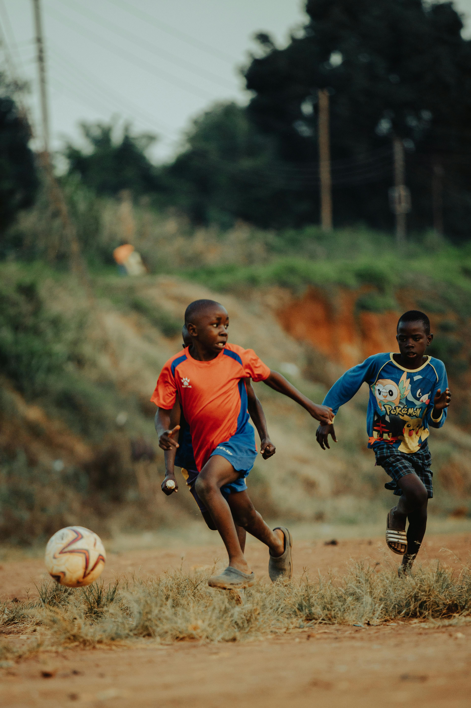
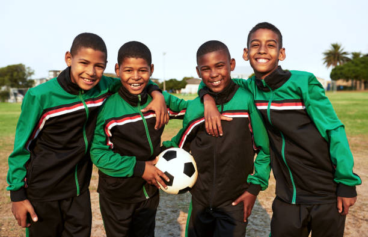
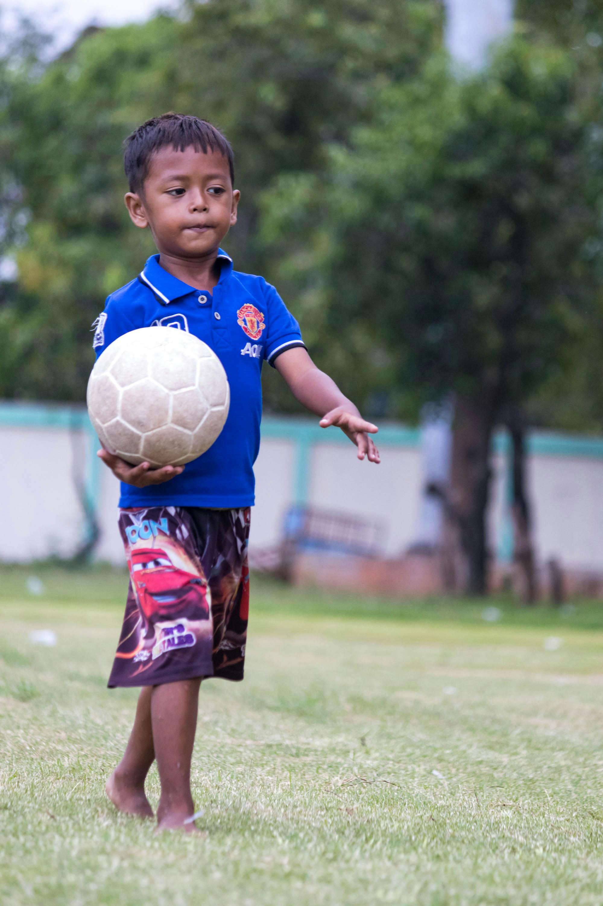
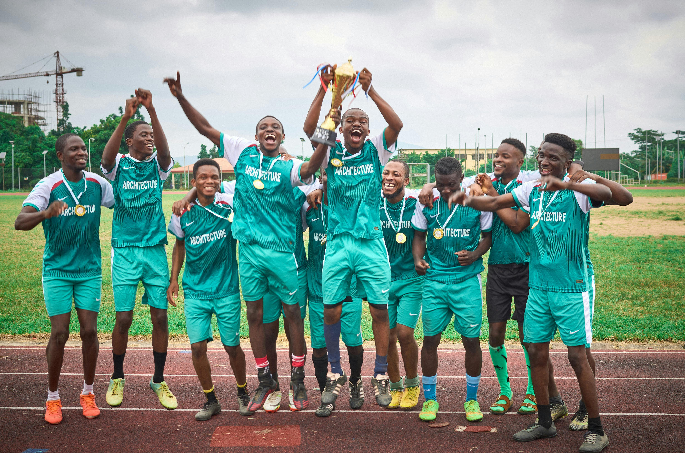

UNITY THROUGH FOOTBALL

Welcome to Unity Football Academy
Uprising football academy with the mission of discovering and nuturing
young talent across all regions in South Africa
Establised in 2002 by Johnnathan McConnor and Jefferey Collins. Unity Football Academy is a up coming football aim to unlock the full potential of young aspiring football lovers and players. UFA FC aims to accomodate kids who are less fortunate to help be a refuge from life's trouble through our NPTP(Non Profit Training Program)

Driven to unleash full potential
At our Youth Football Academy, we do more than just train players we build future leaders. Our mission is to develop young athletes both on and off the field by combining professional football training with life skills, discipline, and strong values.
We provide a structured environment where players of all skill levels can grow, learn, and compete. Through expert coaching, modern training techniques, and a passion for the game, we help each player unlock their full potential. From technical skills and tactical understanding to teamwork and confidence, every session is designed to shape well-rounded individuals.
Our academy teams
Fundamentals

Players aged from 5-11
Basic fundamental training of the game through the most essential skills for any footballer.
Player Development
players age from 11-17
This phase focuses on engineering young for competitive areas such as playing at the professional stage
Through competitive and adjusted training schedules, players are promised to reach new footballing heights.
Career Ambitions

Players aged from 18-21
At these phase we prepare our players for the real world of football ahead. Through intense professional training routines, competitive league action, our players
are sure to fully equiped for the real football world, pursuing in their football ambitions.
We also asist our players through our collaborations with official clubs globally, giving our players the oppurtunity to pursue the game across differnt regions in the world.
Follow us on